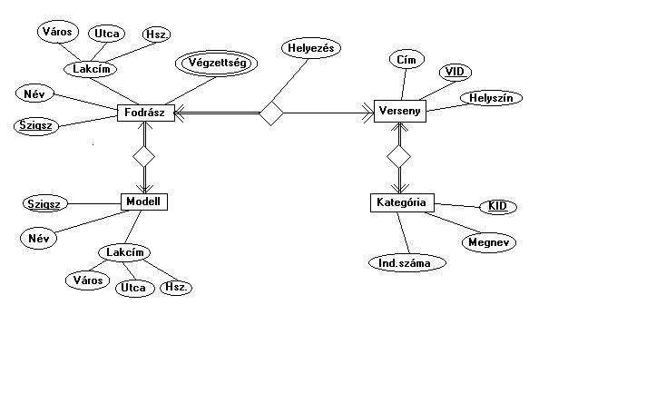

Adatbázisrendszerek
A tárgy célja:
- Az adatmodellezés elveinek elsajátítása,
- a relációs adatmodell megismerése,
- a relációs adatbázisok tervezési módszereinek megtanulása.
- A relációs adatbáziskezelés megismerése,
- A szabvány SQL nyelv alkalmazásának elsajátítása.
A tárgy tematikája:
- Adatkezelés és adatbáziskezelés alapfogalmai,
- fileszervezési módszerek,
- B-fa index;
- adatbázis architektúra;
- Adatmodellek,
- SDM modellek áttekintése,
- ER adatmodell,
- EER adatmodell;
- Hierarchikus adatmodell.
- Hálós adatmodell áttekintése.
- Hálós adatmodell műveleti része;
- Relációs adatmodell,
- relációs struktúra és integritási feltételek.
- Relációs adatmodell műveleti része,
- relációs algebra;
- Az SQL szabvány relációs kezelő nyelv bemutatása,
- a DDL,
- DML és a SELECT utasítások használata;
- Az SQL92 szabvány további elemei;
- Az adatmodellezés problémái,
- adatbázis fejlesztési módszertanok.
- DBMS termékek SQL implementációnak áttekintése.
